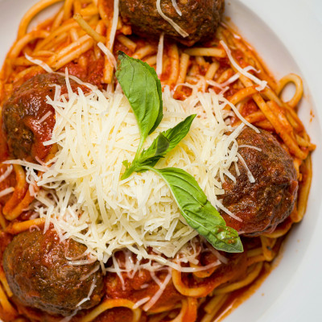

Spaghetti

Description
Spaghetti is a classic italian pasta dish often served with tomato sauce,
meat, or vegetables.
The pasta has a tender texture, combined with a rich sauce that makes it a
favorite among many. Spaghetti is easy to prepare and can be customized
with various additional ingredients to suit your taste.
Ingredients
- Dried spaghetti
- Ground meat (optional)
- Garlic
- Onion
- Tomato sauce
- Olive oil
- Salt
- Pepper
- Oregano or basil (optional)
- Parmesan cheese (optional)
Steps
-
Cook the Spaghetti: Boil the spaghetti in salted water until al dente,
according to the package instructions. Drain and set aside.
-
Saute the Onions: Heat olive oil in a pan, then saute garlic and onions
until fragrant.
-
Add Meat(If Using): Add the ground meat, cooking until browned and fully
cooked.
-
Add Tomato Sauce: Pour in the tomato sauce, add salt, pepper, and
oregano or basil if desired. Simmer the sauce until it thickens.
-
Mix with spaghetti: Toss the cooked spaghetti into the sauce and mix
until well combined.
-
Serve: Serve the spaghetti hot, topped with grated parmesan cheese if
desired.